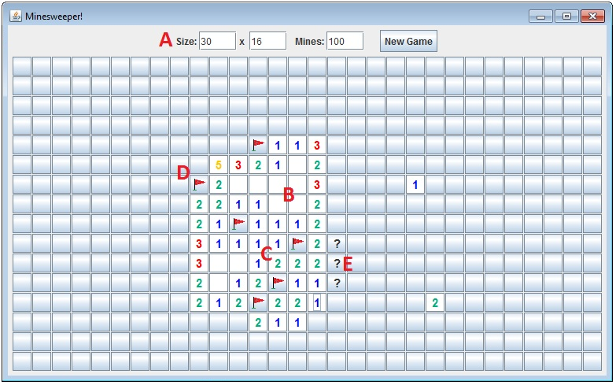
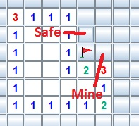

Minesweeper Clone - User Guide
Minesweeper is a game of deduction and luck in which you explore a grid filled with mines until you've revealed every non-mine cell. But don't click a mine! That will detonate all of them, ending your game.
Left-clicking a cell on the grid will reveal it to you. If the cell does not contain a mine, one or more numbers will appear. Each number designates how many mines lie in adjacent tiles. If no mines are located in the adjacent tiles, the cell will appear empty and all adjacent tiles will be automatically revealed. If the cell you revealed does contain a mine, it's game over--so be careful!
Right-clicking an unrevealed cell will display a flag icon to designate it as a mine. Right-clicking it again will show a question mark. One more right click will set it back to its original state. This has no functional purpose but to help you keep track of which cells are confirmed or suspected to be mines.
There you have it: Left-click the cells you think are safe to reveal them, and right-click the ones you suspect are mines to keep track of your progress.Winning will take logic, strategy...and a little bit of luck!
Minesweeper Clone user interface
- A. New Game area. You can designate the grid size of your next game and the number of mines to populate it with. Here are some suggested settings...
- Beginner: 9 x 9 cell grid, 10 mines.
- Intermediate: 16 x 16 cell grid, 40 mines.
- Advanced: 30 x 16 cell grid, 100 mines (default).
- B. Empty cells with no adjacent mines. When these are revealed, all adjacent cells will automatically be revealed.
- C. Empty cells with adjacent mines. The number in the cell designates the number of adjacent mines.
- D. Flag icon. Right-click a cell one time to flag it. You can use this to remind you that a mine is there.
- E. Question mark icons. Right-click a flagged cell to display a question mark (?). You can use this to remind yourself which cells you suspect to be mines, or which you are unsure of.
Tips
- Your first click on a new board will always be at a safe cell surrounded by safe cells on all sides. Making your first click away from the edges of the grid may maximize the number of safe cells you uncover with the initial click. 
- The best place to start in any new game is by flagging the corner cells as shown in the picture. By establishing that first corner cell as a mine, we can also deduce that the cell above the flag is safe (note the '1' to the left of it) and that the cell to the right of the flag is a mine (note the '2' below it) and should be flagged.
- Only guess when you're sure there are no other options. If you discover a group of cells in which you'll eventually have to make a guess no matter what, just do it right away! Why bother progressing in a game that you might not be able to complete?